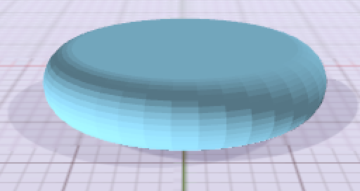
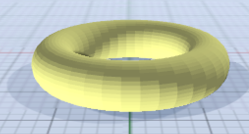
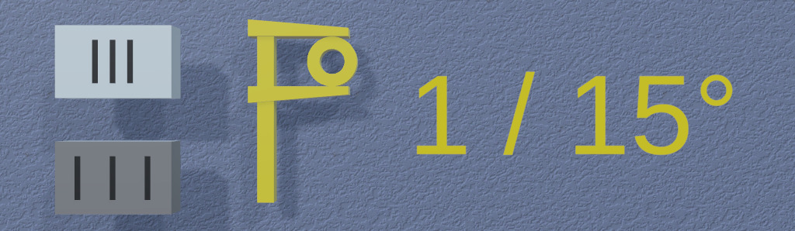
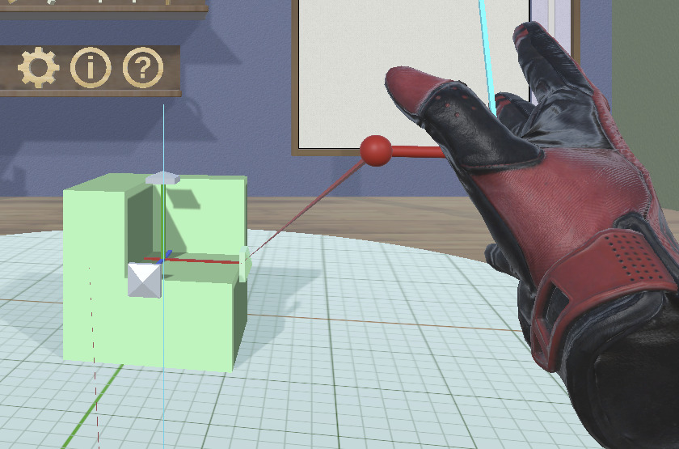
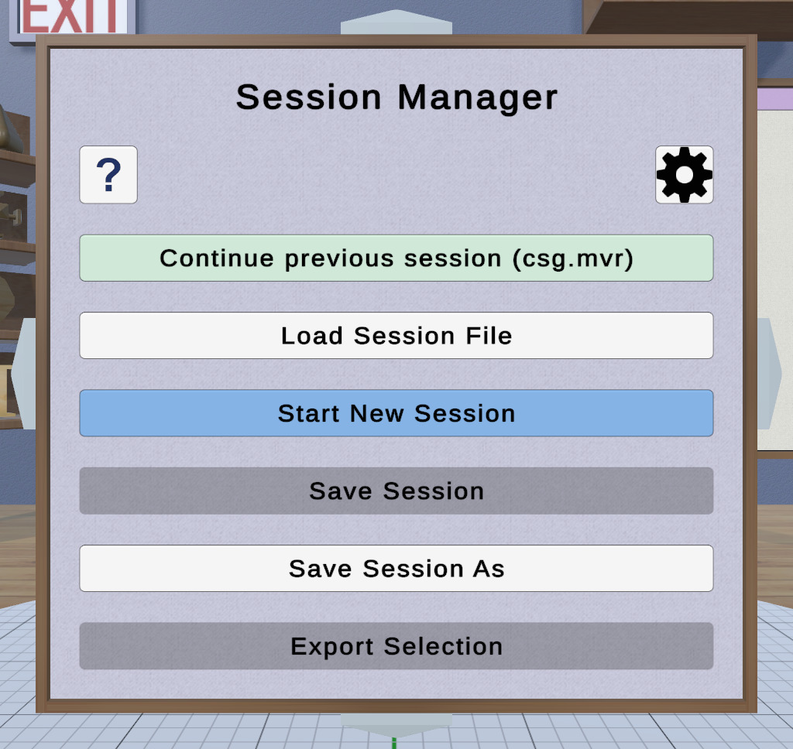
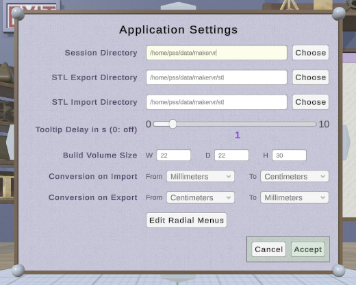
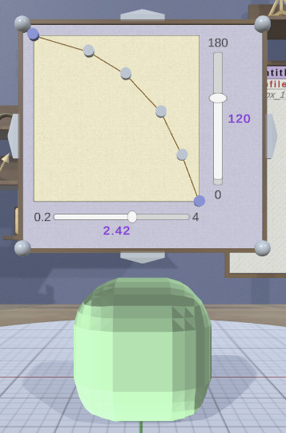
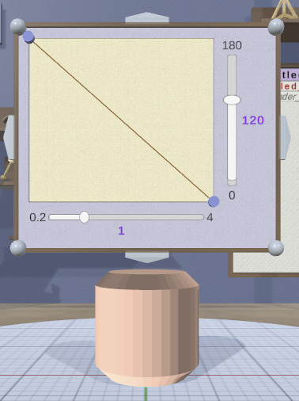
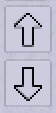

Overview
MakerVR helps you create models that you can then send to a 3D printer. It is designed to be relatively simple to use, even for someone with little to no 3D modeling experience. If you are intimidated by 3D modelers like Blender, you might find MakerVR useful.
MakerVR is inspired somewhat by OpenSCAD (my favorite program for creating 3D models). OpenSCAD is great if you don't mind typing in numbers for everything and have a reasonable amount of 3D graphics experience. MakerVR is designed to have a similar amount of power while still being useful to beginners.
Workflow
Typical use of MakerVR to create models for 3D printing involves the following steps:
- Create one or more models of different types or import existing models in STL format.
- Edit the models and/or combine them in different ways to create new models.
- Export any of the resulting models to STL files to send to a 3D printer.
Because precision is extremely important when 3D printing, MakerVR has several features that allow you to create models with exact dimensions, orientations, and positions. See the section on precision for details.
The Work Area

The work area in MakerVR is based conceptually on a virtual workshop. You may notice the following elements:
- Four walls, a floor, and a ceiling. They just provide scene context.
- An exit sign. Clicking on this exits the application. If you haven't saved your session, you will be asked to do so.
- A large disc in the middle of the floor with a grid on it. This is the stage on which models are built.
- A pole on the right with a ring around it. The ring is a height slider that can be used to change the view height.
- Several shelves with 3D icons on them. Each icon represents an action that makes a change to the scene or program state.
- A caliper to the right of the exit sign with text that shows the current precision level, along with buttons to increase or decrease it.
- A large framed panel on the right of the back wall. This is the Tree Panel that shows your models in tree form and provides various ways to interact with them.
Sessions
Unlike applications that save your work as a data file, MakerVR stores your session as a series of commands that have been executed. This means that you can save your session, quit, restart your session, and be back pretty much where you were. You can undo all of your work back to the beginning if you feel like it.
When you start the application, the first thing you see is the Session Panel. It offers you the chance to continue the current session (if there is one), load a different session, or start a new session. The location of saved sessions is customizable in the Settings Panel.
The state of various settings (such as whether targets and edges are visible) is saved along with the session and is restored when a session is loaded.
The name of the current session file is displayed at the top of the Tree Panel. The name is followed by a string indicating whether the scene or settings have been modified.
Coordinate System and Units

MakerVR uses the same coordinate system that most 3D printing software uses: right-handed, with +X to the right, +Y away from the viewer, and +Z up. The surface of the stage is at Z=0.
Don't let the fact that this application is built on Unity with its ridiculous left-handed coordinate system bother you.
MakerVR is essentially unit-independent. The only places where units are considered are:
- When models are imported or exported from or to STL files.
- When the 3D printer build volume is shown.
The Settings Panel allows you to specify how to convert units when importing and exporting, and also how large the build volume is in whatever units you would like to work in.
The application assumes by default that everything is expressed in centimeter units. If your 3D printing software expects STL files in millimeter units, you can convert from centimeters to millimeters on export. If you are importing an STL file that is in millimeters, you can convert it from millimeters to centimeters on import.
If you want for some reason to work in inches, you can just consider the working units to be inches, and use the same conversion facilities to convert to and from saner units.
Note that the grid on the stage has thin lines every 1 unit, with thicker lines every 5 units. The grid grows or shrinks when the stage is scaled so that you can always measure absolute sizes of models. The X and Y axes are colored red and green on the grid for reference.
The Build Volume
If you want to make sure that your models will fit within your 3D printer's build volume, you can choose to display the build volume on the stage by clicking on the Build Volume Toggle icon. The build volume is rendered as a translucent box. You can specify the size of your build volume in the Settings Panel.
When the build volume is visible, parts of models that lie outside it are rendered in a special color to warn you of potential printing errors.
Colors
Most everything in the application that aligns with the coordinate axes uses the standard RGB color scheme: X is red, Y is green, Z is blue, as shown above. This is true for tool parts, hover guides, and interactive visual feedback.
Interaction
While MakerVR is designed to be reasonably intuitive, there are a few things that may need explanation before you can dive into using it.
VR and Non-VR Modes
MakerVR was originally designed to operate in a virtual environment because I it seemed like it would be a fun experience. But, since most people do not have a VR setup, I thought it might be useful if it also worked without VR, using just a conventional mouse and keyboard setup. And, since putting on and taking off a headset can be very inconvenient while developing an application (especially if you happen to wear glasses), I thought it might be useful and fun to allow using the VR controllers even without the headset. This turned out to be possible!
Each of these modes is called out in this guide when interaction differs among them. The modes are named as follows:
- VR mode is active when you have a VR device hooked up, you are wearing the headset, and are holding the controllers.
- In conventional mode, you either do not have a VR device hooked up or you do but you just want to use the mouse and keyboard.
- Hybrid mode is halfway between the other two: you have a VR device hooked up, you do not have the headset on, and you have at least one VR controller in your hand(s).
Some VR experiences allow you or force you to walk around while using them. That wouldn't make sense for this application, so it is designed to make everything useful from one spot. If you're planning to use the VR mode, set it up for a comfortable, fixed standing or seated position. Note that the scene view is set up for sitting, so you may need to adjust your VR positioning for a different height if you prefer to stand.
MakerVR was developed using an HTC Vive (since that's what I have), but should (!) work with any standard VR controllers supported by SteamVR.
Clicking and Dragging
MakerVR responds to mouse and keyboard actions in any of the three modes. Note that the left mouse button is used for all click and drag actions; the right mouse button is used to change the view orientation. Keyboard shortcuts are listed in the Cheat Sheet.
Controller use is as follows:
-
The controllers appear in the VR scene as hands that react to interaction, courtesy of SteamVR.
-
A cyan laser pointer emanates from the forward direction of each controller. the pinch action (usually the trigger button) activates whatever the laser is pointing to, if it is interactive. The pinch action is used for the controller equivalent of clicking and dragging with the mouse.
-
Some tools allow you to use a controller's grip button to interact. In this case, a tool will attach a hover guide to the hands to help indicate what the grip action will affect. When active, the hover guide will show a connection to the interactive element that will be activated when the grip button is pressed. There are different types of hover guides; see the descriptions of the individual tools for details on grip dragging. The connection and guide are usually color-coded.
Note that in hybrid mode, some behind-the-scenes nonsense takes place so that you can see the hands, guides, and pointers in the (non-VR) window.
Radial Menus

In VR or hybrid mode, pressing the menu button on a controller activates a radial menu attached to the corresponding hand in the scene. Each button in a radial menu is a shortcut to some action. Slide your thumb around the trackpad or move the joystick (depending on the controller) to highlight the desired item and press the trackpad or joystick button to activate it. The menu is dismissed when you activate any radial menu button, if you press the menu button again, or if you press any keyboard key.
Note that radial menus are also available for use with the mouse in conventional mode via keyboard shortcuts. In this mode, the menu appears in a fixed position on the appropriate side of the window for interaction with the mouse. You can configure the radial menu for each hand in the Radial Menu Editor Panel.
Alternate Interaction Mode
Some interactive objects have two different modes of operation, regular and what is referred to as Alternate Mode. The term "Alt" is also used to refer to this mode within this guide, such as in "Alt-click", "Alt-drag", or "Alt-select". Please do not confuse this with the "Alt" key.
Alternate mode is activated by any of these:
- Holding down the shift key on the keyboard
- Holding down the center button of either controller's trackpad/joystick.
- Double-clicking with the mouse or pinch action. Note that this currently works only for Alt-clicking and not (yet) for Alt-dragging.
For example, when clicking on a model to select it, the Alt version is to multi-select the model or deselect it if it is already selected. When dragging a handle in the Scale Tool, the Alt version performs a symmetric scale about the model's center point instead of a asymmetric scale. Other uses are described elsewhere in this guide.
The Stage
The stage is the large disc on the floor of the work area. Models are placed on the stage by default when they are created.
The stage can be manipulated to change your view of the models:
- Drag it in a circular arc to rotate it along with the models on it.
- Drag toward or away from the stage center to scale the stage and models on it up or down.
- In conventional mode, the mouse wheel also scales the stage.
- Alt-clicking anywhere on the stage resets it to its default size and rotation.
Rotating and scaling the stage is a fairly easy way to get a different perspective on your models without modifying the models themselves. Another option is to use inspector mode.
Viewing
MakerVR is designed to be maintain a relatively stable viewpoint. However, there may be times when you want to change the view of your scene (in addition to manipulating the stage or using inspector mode.
In VR mode, you can turn your head to see the room from different angles, if you wish. In conventional or hybrid mode, you can use the right mouse button to rotate the view. Additionally, the height slider on the pole on the right side of the work area can be dragged up and down to raise and lower your view of the room. Clicking on the ring brings you back to the default height. Alt-clicking on the ring also resets the view direction to the default, unless you are in VR mode (where the view always aligns with your head, of course).
Inspector Mode
MakerVR provides a special inspector mode that lets you easily examine a model from all directions. To inspect a model, select it as the primary selection, and click on the Inspector action icon. A shortcut to this mode is to long-press (more than a half-second or so) either the mouse button or laser pointer/pinch action on a model, whether selected or not. There is also a keyboard shortcut.
When in VR mode with the headset on, the model will be attached to the controller in the hand that initiated inspection. You can move and turn your hand around to see the model from all angles.
When in conventional mode or hybrid mode, the model will be enlarged and placed in the middle of the application window. In conventional mode, moving the mouse (no need to click) rotates the model. In hybrid mode, interaction depends on whether inspector mode was initiated with the mouse. If so, it is the same as conventional mode. If inspector mode was initiated with a controller, that controller rotates the model as in VR mode.
Any key press, mouse click, or controller button press exits inspector mode.
Tooltips
Anything in the application that is interactive responds to hovering with the mouse or laser pointer by highlighting in some way. For most items, if you hover long enough, a tooltip will appear with information about the interaction. For example, hovering over a tool icon gives information about what the tool does, while hovering over any model in the scene shows the name of the model.
The delay for showing tooltips is a setting that can be edited in the Settings Panel. Setting the delay to 0 turns off tooltips completely.
Text Input
Some parts of the application require text input, such as editing the name of a model or entering the name of a new file. Using the keyboard is always an option for text. If you have the headset on in VR mode, you might not want to take it off or put the controllers down just to edit text. You're in luck; text editing in VR mode is available using VRKeys. It provides a virtual keyboard with a xylophone-like interface for editing text. It's pretty cool.
Attached to the front of the virtual keyboard is a bar that can be used to reposition the keyboard. Grip-dragging this bar with either controller allows you to move the bar and keyboard in all three dimensions to make it easier to access.
Models
MakerVR supports a variety of different types of models. Many model types have a specialized tool designed specifically for editing them. Some (such as Sphere and Box models) have no specialized tools because there is nothing that cannot be modifed with a general tool.
Geometric Operations
One of the main features of MakerVR is the ability to create new models by applying certain geometric operations.
Constructive Solid Geometry (CSG)
One of the most useful ways to create a new model is to apply any of the three constructive solid geometry (CSG) operations to two or more models:
- Union adds all of the models together.
- Intersection uses the intersection of all selected models.
- Difference subtracts all secondary selections from the primary selection. Unlike the other two operations, difference is asymmetric, so the selection order really matters.


These images show the original operand models, a box and a cylinder, and the resulting CSG union, intersection, and difference (cylinder subtracted from the box).
Note that in some cases converting a model to a Clipped model and applying the Clip Tool may turn out to be a simpler method of geometric editing.
Convex Hull

Another geometric operation is the convex hull operation, which creates a new model from the 3D convex hull of one or more selected models. This can be used to easily create different shapes. For example, here is an easy way to create a capsule by applying the convex hull operation to two spheres.
 
The hull operation can sometimes be useful to apply to a single model, if the model is not already convex. Here's an example of creating a rounded disk as the convex hull of a torus.
Some Patience Required
MakerVR uses the CGAL library to compute the combinations of objects. Even though this library is very powerful, robust, and well-optimized, it can still take some time to compute the results in complex cases. This work is performed in a separate thread so that the application is not frozen while it happens. While the computation is active, the combined model may be displayed as a 3D hourglass and the mouse cursor (visible when not in VR mode) will also be an hourglass.
Model Types
Models can be divided into three basic categories:
- Primitive models, which are created from scratch or imported from STL files.
- Converted models, which are created by converting other types of models in order to apply a specialized tool. For example, if you want to create beveled edges on a Box model, you first convert it to a Beveled model, then use the Bevel Tool to change the bevel if necessary.
- Combined models, which are created by combining other models in different ways. The result may or may not have a specialized tool associated with it.
Primitive Models
- A Box model represents a 3D box with the length of all sides equal to 8 units by default. There is no specialized tool for a Box.
- A Cylinder model represents a closed cylinder that by default has a diameter and height of 8 units. Its axis of symmetry is aligned with the +Z ("up") axis. The Cylinder Tool is the specialized tool for a Cylinder; it allows you to change the top and bottom diameters independently.
- An Imported model, as its name suggests, is imported from an STL file. The specialized Import Tool is used to select the file to import from and also to reimport the model if any changes were made to the STL file.
- A RevSurf model represents a closed surface of revolution, created by rotating a 2D profile about the Z axis. The default profile consists of 3 points (the minimum allowed) that forms a surface with the widest diameter of 8 units and a height of 8 units. The specialized Surface of Revolution Tool lets you edit the profile and also the sweep angle of the surface.
- A Torus model represents a torus that by default has an outer diameter of 8 units and an inner diameter of 1.6 units. Its axis of symmetry is aligned with the +Z ("up") axis. The Torus Tool is the specialized tool for a Torus; it allows you to change the outer and inner diameters independently.
- A Sphere model represents a sphere that has a diameter of 8 units by default. There is no specialized tool for a Sphere.
- A Text model represents extruded 3D text, which is laid out by default at the origin along the +X axis, extruded 2 units along the +Z (up) direction. It is sized by default so that the characters are approximately 4 units in the Y dimension. The specialized Text Tool allows you to change the text string, font, and character spacing.
Converted Models
Each of these model types is created by selecting one or more models and clicking on the appropriate 3D icon to apply the action to convert them. Once they are converted, you can use the corresponding specialized tool to edit them, as listed below.
Note that this two-step process (converting and editing) makes it clear that a new type of model must be created in order to apply the editing operation. The converted model becomes a parent of the original model in the hierarchy (as shown in the Tree Panel).
- A Beveled model applies a bevel or other profile to edges of a model. The Convert-to-Bevel action is used to convert the models and the Bevel Tool is used to modify the bevel profile.
- A Clipped model clips a model with one or more clipping planes. The Convert-to-Clipped action is used to convert the models and the Clip Tool is used to specify the plane(s).
- A Mirrored model mirrors a model about one or more principal planes. The Convert-to-Mirrored action is used to convert the models and the Mirror Tool is used to specify how to mirror.
Combined Models
A combined model is created by selecting the appropriate number of models and then clicking on the appropriate action icon.
- A CSG model is created as a constructive solid geometry (CSG) combination of two or more models. The operation is specified by clicking on the CSG Difference action, CSG Intersection action, or CSG Union action icons. The operation may be changed afterwards with the CSG Tool, which is the specialized tool for a CSG model.
- A Hull model is created by clicking on the Convex Hull action icon. There is no specialized tool for a Hull model.
Model Names
When MakerVR creates a model of any type, a unique name is assigned to it
automatically by affixing an underscore and a number to its base model type,
such as "Sphere_1" or "Imported_13". Names can be seen and changed in the
Tree Panel.
Model Colors

Reasonable colors are chosen automatically for new models created in the scene. The Color Tool allows you to change them for aesthetic reasons; the colors have no effect on the 3D-printed model.
Two special colors are used for models that have invalid meshes (bright red) or that at least partly lie outside the current build volume (bright cyan) if the build volume is visible, as shown here.
When an invalid mesh is detected, it will retain the invalid mesh color until the problem is fixed. Changes made to such a model with the Color Tool will still take effect, but you will not be able to see them while the model is invalid. Also, some tools will be disabled when an invalid model is selected to avoid compounding the problem.
Model Edge Display

Clicking The Show Edges Toggle icon lets you display edges of your models as visible lines or hide them. Showing them can help you see how your models are tessellated into triangles for 3D printing or to help place the Edge Target.
Note that this feature is not available on OSX, due to shader limitations; it is always disabled on that platform.
Selection
To select a model, click on it with the mouse or pinch action, and the appropriate editing tool will be attached to it.
Multiple models can be selected by alt-clicking on them. Alt-clicking an unselected model adds it as a selection, while alt-clicking a selected model deselects it.
The Tree Panel can also be used to view and change the current selection.
Primary and Secondary Selections
When more than one model is selected, the first selected model is known as the primary selection, and all other selected models form the secondary selections. The current editing tool is attached to only the primary selection. All secondary selections are indicated with a noninteractive blue wireframe box. Some tools and actions treat the primary and secondary selections differently.
Parent and Child Selection
A model that is created from other models adds the original models as children and hides them. This is true for both Converted Models and Combined Models.
You can make the child models visible by selecting them, using either the Tree Panel or the following keyboard shortcuts:
Ctrl-DownArrow(the Select-First-Child action) selects the first child of a parent model.Ctrl-LeftArrow(the Select-Previous-Sibling action)selects the previous sibling of a child or a top-level model, wrapping around as necessary.Ctrl-RightArrow(the Select-Next-Sibling action)selects the next sibling of a child or a top-level model, wrapping around as necessary.Ctrl-UpArrow(the Select-Parent action) selects the parent of a child model.
In addition, Ctrl-A (the Select-All action) selects all
top-level models and Shift-Ctrl-A (the Select-None
action) deselects everything. You can also deselect
everything by clicking on a wall or anywhere else in the work area that is not
interactive. (Keep in mind the stage is interactive, so it doesn't
count.)
Precision
MakerVR offers several features to help you create 3D models with precise dimensions and placement.
Precision Level

MakerVR provides a variable precision level to help you attain exact values during drag operations. There are three levels, each affecting both linear operations (such as scaling and translation) and angular operations (such as rotation).
- 1 unit / 15°
- .1 unit / 5°
- .01 unit / 1°
Assuming centimeter units, the linear precision levels are 1cm, 1mm, and .1mm, respectively.
If you need higher precision than the finest values here, you should probably use a different application.
There are three ways to change the current precision level:
- Clicking on one of the the two buttons on the precision control. (Top button to increase to finer precision; bottom button to decrease to coarser precision.)
- Using
XandZkeyboard shortcuts to increase and decrease levels, respectively. - Clicking the Up or Down buttons on the VR controller trackpad/joystick.
Note that the keyboard and controller shortcuts work even during drag and grip drag operations. Modifying the precision setting during a drag has the following effects:
- Updates the precision control text.
- Changes the precision of the result of the current operation (position, size, etc.).
- Changes the precision of the visual feedback.
- Changes the relative amount of drag motion. This may be startling at first, but makes sense when you try it out. For example, if you want to move an object exactly 5.45 units to the right, you start out with 1 unit precision and drag it 5 units. While still dragging, increase precision to .1 unit and drag it .4 units more. This uses the same amount of drag motion that 4 units would at 1 unit precision, so it's much easier. Finally, increase precision again to .01 unit and drag another .05 units to the right, again with the corresponding amount of drag motion.
Once you get used to this, it becomes relatively easy to achieve precise dimensions and distances interactively.
Visual Feedback


Most interactive drag operations display some sort of visual feedback. Operations that are essentially linear show the current dimension of that change along a line, while rotations show the current angle. Multi-dimensional changes such as uniform scaling and spherical rotation show feedback in all affected dimensions. The precision of the feedback matches the current precision level.
Feedback is colored according to the coordinate system convention for the appropriate dimension(s). When a drag is snapped to a target, feedback is displayed in the active target color.
Targets
Interactive placement can sometimes be tedious, so MakerVR offers extra help for some operations using targets. There are two targets available in the application, the point target and edge target.
To activate or deactivate a target, click on the corresponding toggle icon, as described below. When activated, a visual representation of the target appears, initially in the center of the stage. If the target is obscured by models, you can use the Tree Panel to hide those models temporarily.
Targets can be dragged to other locations, as described below. While a target is being dragged, its color changes from the standard target color (cyan) to the active target color (orange).
When dragging a target on the stage, the target will snap to grid locations based on the current precision level.
Point Target
The point target indicates a position (shown by the sphere at the base) and orientation (shown by the arrow) in the scene. To activate or deactivate the point target, click on the Point Target Toggle.
Effects
When the point target is active, most position-based drag operations (such as translation) will snap to the target's position in all affected dimensions. When snapping occurs during one of these operations, both the visual feedback and target change to the active target color.
The point target can also be used for instantly positioning a model, and it has other features that let it be used be used for radial layout; see Radial Layout below for details.
Positioning on Models or the Stage
The point target can be dragged by any part (except the ring) to any point on a model or on the stage. When dragging over a model's surface, the target location will snap to vertices of the model's triangular mesh when close enough to them, based on the current precision level. When this occurs, a snap indicator (sphere at the tip of the target's arrow) will appear.
Alt-dragging the point target on a model uses the rectangular bounds of the model instead of its mesh. The target will snap to the minimum, maximum, and center values of the bounds in each dimension. You can use this feature to more easily attach the point target to important points on objects with asymmetric meshes.
When alt-dragging the point target, the snap indicator sphere will appear when any snapping occurs, and is color-coded by dimension. If snapping occurs in two dimensions, the color will be the sum of the two dimensions' color. For example, if alt-dragging the point target on the front (-Y) face of a model's bounds, the indicator will be red (X) when snapping to the left edge, center, or right edge of the face. It will be blue (Z) when snapping to the bottom edge, center, or top edge of the face. It will be magenta (red + blue) when snapping to both at the same time.
Edge Target
The edge target indicates a length and orientation in the scene. To activate or deactivate the edge target, click on the Edge Target Toggle.
Effects
When the edge target is active, dragging during a size-based operation (such as scaling a model or changing a cylinder or torus diameter) snaps to the target length. When snapping occurs during one of these operations, both the feedback and the target change to the active target color.
The edge target can also be used for immediate linear layout. See Linear Layout below for details.
Positioning on Models or the Stage
When dragged over the surface of a model, the edge target snaps to the closest edge of the model's mesh. (To see model edges more clearly, you can show the edges.) If the edge target is dragged from a model to the stage, it retains the length of the last edge it snapped to.
Alt-dragging the edge target on a model uses the rectangular bounds of the model instead of its mesh; the target will snap to the nearest edge of the bounds. You can use this feature to easily set the edge target length to any dimension of a model's bounds.
Clicking on the edge target reverses its direction, which is useful when performing linear layout.
Layout
The point and edge targets can also be used to perform radial and linear layout, respectively.
Radial Layout
The point target can also be used to lay out selected models along a circle or circular arc. All of the parameters of the layout are specified using the features of the target. When they are all set, click on the Radial Layout icon to lay out the selected models.
If exactly one model is selected and the Radial Layout icon is clicked, the bottom center of the model will be moved to the point target's location and the model's "up" (+Z) direction will be aligned with the point target's direction.

If two or more models are selected, clicking on the Radial Layout icon will lay them out along a circle or arc. To set this up, you can use some extra features of the point target. To use them, drag the ring of the target to make it larger. As you do this, you will see feedback above the arrow showing the diameter of the ring, which will be the diameter of the circle or arc for your layout. The radius follows the current precision level.
Intersecting the ring are two spokes, one green and one red. These are used to modify the starting and ending angles for layout, respectively. If you drag the green (starting) spoke, both spokes rotate around the circle. If you drag the red (ending) spoke, only the red spoke moves. The arc connecting the spokes shows the direction of the layout (green to red). If you want to reverse the direction, drag the red spoke past the green one in the desired direction. As you drag either spoke, color-coded feedback shows the angle of each spoke and the subtended layout angle. Note that the spoke angles also follow the current precision level.
Once you have set up the point target with the correct position, orientation, radius, and angles, clicking on the Radial Layout icon will position all selected models with their bottom centers along the circle or arc (without changing their orientations). The selection order determines the order in which they are laid out: the primary selection will be at the start angle, and the last-selected model will be at the end angle.
The point target retains the radial settings (diameter and angles) until you reset it by dragging the ring back to its tiny state.
Linear Layout
The edge target can be used to lay out two or more models along a line. The direction and length of the target determine the offset between models. The primary selection will not move. The center of the first secondary selection will be placed at the offset from the primary model's center, and so on for subsequent selected models, in selection order.
It may be useful to create a temporary model with the correct size as a layout aid. For example, suppose you want to lay out 3 models along the X direction with 6 units between their centers:
- Create a box and scale it so that it is 6 units in size in X (using 1 unit precision.
- Activate the edge target and drag it onto one of the box edges in the X direction. The target will then be exactly 6 units in length and lie along the X axis. Click on the edge target to flip it if it is pointing in the wrong direction.
- Delete the box if you no longer need it.
- Select the primary selection - the one that will not move.
- Alt-select the other models you want to lay out, in order.
- Click on the Linear Layout icon to lay them out.
Shelves and Actions
Each 3D icon on the shelves in the work area represents an action that makes some sort of change to the scene or program state. These actions can be divided into these general types:
- A toggle action changes some program state that is either on or off. For example, the Show Edges toggle action turns the visibility of polygonal edges on or off.
- A tool action selects a tool to attach to the currently-selected model(s).
- A panel action brings up a 2D GUI Panel that performs some specific task.
- All other actions make some sort of change immediately, whether to models, the selection state, or something else.
Each action has a corresponding name and 2D icon that is used to apply that action from radial menus. The Cheat Sheet lists all supported actions along with their names, icons, and shortcuts.
Note that some actions do not have corresponding 3D icons; they can be performed only via a radial menu or keyboard shortcut.
Icon Appearance
Most icons appear with a light woodgrain appearance. An icon that represents an action that is disabled because of the current state will be dark instead.
Icons that represent toggle actions will be colored green when the toggle is in the "on" state and regular woodgrain when in the "off" state.
Organization
The 3D icons in the scene are organized into shelves, which correspond (roughly) to the categories in the Cheat Sheet. The shelves are also organized into groups placed within the work area as follows:
- Shelves along the left wall (bottom to top): model creation, general tools, model conversion, model combination, and specialized tool access.
- Shelves along the back wall (top to bottom): basic actions, layout helpers, and file-related actions.
- Shelf above the Tree Panel on the back wall: viewing-related actions.
Left Wall Shelves
These shelves are on the left wall of the work area. They are listed from bottom to top.
Model Creation Shelf
The icons on this shelf are used to create new models of a specific type. From left to right, these are:
- Imported model
- Box model
- Cylinder model
- RevSurf (surface of revolution) model
- Sphere model
- Text model
- Torus model
Clicking on any of these icons creates a new instance of the corresponding model, which drops in from above. If the point target is visible, the new model will land with its bottom center point at the base of the point target and with the model's +Z ("up") direction aligned with the point target's direction arrow.
The new model is automatically selected. If the newly-created model has a specialized tool associated with it, that tool will automatically be attached to it. Otherwise, the current general tool will be attached.
General Tool Shelf
The icons on this shelf represent general tools that can be used to modify any model. In order from left to right, they are:
Clicking on any of these icons attaches the corresponding tool to the primary selection.
Model Conversion Shelf
Each of the icons on this shelf is used to apply an immediate action to convert selected models to specific types of converted models so that some sort of specific editing operation can be applied. From left to right, they are:
- The Convert-to-Beveled action converts the selected models to Beveled models and attaches the Bevel Tool to the primary selection.
- The Convert-to-Clipped action converts the selected models to Clipped models and attaches the Clip Tool to the primary selection.
- The Convert-to-Mirrored converts the selected models to Mirrored models and attaches the Mirror Tool to the primary selection.
Model Combination Shelf
Each of these icons combines one or more selected models into a combined model of some type. From left to right, they are:
Note that the CSG operations require 2 or more models to be selected, but the Convex Hull operation can be applied to a single model.
When one of the CSG operations is applied, the CSG Tool will be automatically attached to the resulting CSG model.
Specialized Tool Shelf

There is a single icon on this shelf at any time, which implements the Specialized-Tool toggle action. This toggles between using the current general tool and the specialized tool for the primary selection, if any. When a specialized tool is available, the icon changes form to one of these icons to show which tool will be used. Otherwise, the tools shows a null sign icon and is disabled.
Back Wall Shelves
These shelves are on the back wall of the work area. They are listed from top to bottom.
Basics Shelf
Icons on this shelf apply standard actions you would expect to find in an interactive application. They are listed here from left to right.
- The Undo action undoes the last operation performed that modified the scene in some way.
- The Redo action redoes the last undone action.
- The Delete action deletes all selected models from the scene. They are gone forever, unless you undo.
- The Cut action copies all selected models from the scene to the clipboard and removes them from the scene.
- The Copy action copies all selected models from the scene into the clipboard.
- The Paste action pastes all models from the clipboard into the scene as top-level models at their previous 3D locations.
- The Paste-Into action can be used to paste models from the clipboard as children of the currently-selected model, as long as that model is one that can have children. For example, if you have a CSG union model and you want to add another piece (say, a box) to it, you can cut or copy the box (in the correct position, of course), select the CSG model, and click the Paste-Into icon. The box will be added as a child of the union.
Note that Undo/Redo actions apply to these operations:
- Any change to a model or models.
- Changing the position or any other aspect of either of the targets.
Actions that are not considered changes and are therefore not undoable include:
- Changing the view or the stage orientation or scale.
- Selecting or deselecting models. (However, undoing other actions may affect the current selection.)
- Toggling any program state, such as target or edge visibility.
- Using the Copy action, since it has no visible effect except to update the clipboard. Note that you may be able to use this to your advantage.
Hovering over the Undo or Redo icon shows a tooltip indicating what operation will be undone or redone.
Layout Shelf
This shelf contains icons for operations that can help lay out or position models with respect to each other. They are, from left to right:
- The Point-Target toggle action changes the visibility of the point target.
- The Edge-Target toggle action changes the visibility of the edge target.
- The Linear-Layout action uses the edge target to lay out selected models along a line. See the section on linear layout for details.
- The Radial-Layout action uses the point target to lay out selected models along a circular arc or to move a single model to the target. See the section on radial layout for details.
- The Axis-Aligned toggle action changes whether certain tools operate in the selected model's local coordinates or in stage coordinates. For example, if a model has been rotated to an arbitrary orientation and you want to move it 5 units to the right in the scene, you can turn on axis-alignment and the Translation Tool will then be aligned with the stage axes, not the model's local axes. This toggle affects the Clip Tool, Mirror Tool, Rotation Tool, and Translation Tool.
File Shelf
The file shelf has four icons, each of which brings up a specific GUI Panel. From left to right, they are:
- The Session-Panel action brings up the Session Panel, which allows you to save your session, load a new session, and so on.
- The Settings-Panel action brings up the Settings Panel, which allows you to edit application settings.
- The Info-Panel action brings up the Info Panel, which shows information about currently selected models.
- The Help-Panel action brings up the Help Panel, which displays the application version and has buttons to open this guide or the Cheat Sheet in a browser.
Viewing Shelf
The viewing shelf is alone above the Tree Panel on the back wall. It has icons for tools that deal with viewing models. From left to right:
- The Inspector action shows the current primary selection in inspector mode.
- The Build-Volume toggle action shows or hides a representation of your 3D printer's build volume.
- The Show-Edges toggle action lets you show or hide model edges as visible lines.
Other Actions
There are other actions available through other parts of the work area or only through radial menus and keyboard shortcuts; see the Cheat Sheet for details. They are:
- The Edit-Name action is the same as using the Tree Panel to edit the name of the primary selection.
- The Hide-Selected action hides all selected top-level models, and the Show-All action shows all hidden top-level models.
- The Increase-Complexity and Decrease-Complexity actions increase or decrease the complexity of selected models by .05 (within the 0-1 range). This can be a quicker way to modify complexity than by using the Complexity Tool.
- The Increase-Precision and Decrease-Precision actions are equivalent to clicking the corresponding buttons on the precision control.
- The Left-Radial-Menu and Right-Radial-Menu toggle actions show or hide the radial menu for the corresponding hand.
- The Move-to-Origin action moves the primary selection so that it is at the origin (center of the stage). Any secondary selections are moved by the same amount.
- The Move-Previous and Move-Next actions are the same as using the Tree Panel to change the order of models within a parent model or at the top level.
- The Select-All action selects all top-level models, and the Select-None action deselects all selected models.
- The Select-First-Child, Select-Previous-Sibling, Select-Next-Sibling, and Select-Parent actions are used to select through model hierarchies.
- The Switch-to-Previous-Tool and Switch-to-Next-Tool actions change which is the current general tool.
Tools
Tools are interactive objects that attach to models in the scene to perform a specific type of editing.
Tools are divided into two categories:
- A general tool can be attached to any model, regardless of its type*. Every general tool is a 3D tool that appears around or above the model being edited.
- A specialized tool can be applied only to a model of a specific type. It is used to modify unique editable features of that type of model. Some specialized tools are 3D tools, and some are panel tools, meaning that they use a special 2D GUI panel for interactive editing.
*There is actually one exception to the general tools rule. The Complexity Tool cannot be used for certain model types.
Tool Attaching and Switching
MakerVR maintains a current general tool, which is generally the last general tool that was used. It is initially the Translation Tool. You can switch to any other enabled general tool by using the mouse or laser/pinch to select its icon on the General Tool Shelf.
You can also switch general tools with the
Switch-to-Previous-Tool or
Switch-to-Next-Tool actions. The
shortcuts for these are the [ and ] keys or the Left and Right
buttons on either controller's trackpad/joystick.
As mentioned previously, some types of models have corresponding specialized tools. When a model of one of these types is created, the corresponding specialized tool is automatically attached to it so you can edit it. If the new model has no specialized tool, the current general tool will be attached.
Switching between the current general tool and the specialized tool for a model (if it has one) is done with the Specialized-Tool toggle action. The shortcut for this is the spacebar on the keyboard or the Center buttons on either controller's trackpad/joystick. When a specialized tool is available or active, the 3D icon for the toggle changes to reflect the tool. The 3D icon will be the same as the 3D icon of the action used to create a specialized model of that type (whether through creation or conversion) with a yellow edit pencil in front of it.
When changing the selection, the following rules apply:
- If the last attached tool was any specialized tool and all selected models support the same specialized tool (not necessarily the current one), that tool will be attached to the primary selection.
- In all other cases, the current general tool will be attached to the primary selection.
General Tools
Each of these general tools can be activated by clicking on the corresponding icon on the general tool shelf or by switching to it as described above.
Color Tool

The Color Tool edits the color of all selected models. It is placed above the primary selection. The disc in the center of the tool shows the current color of the primary selection, as does the small marker in the outer ring. Clicking or dragging anywhere in the ring moves the marker and changes the color of all selected models. Grip-dragging works as well; the relative position of the controller is used to move the marker around the ring.
Colors have no real effect on the 3D-printed model, but they can be used to distinguish different parts while editing. Or just to make things look nicer.
Complexity Tool
The Complexity Tool appears above the primary selection and changes the number of triangles used to represent all selected models.


Dragging the slider handle on the Complexity Tool updates the number of triangles used for all affected selected models. Grip-dragging also works; the relative position of the controller moves the handle. These images show two positions of the handle applied to a cylinder's complexity.
Some important notes:
- The Complexity Tool has no effect on certain models and its icon will be disabled for those: Box models, Imported models, Combined models, or any model converted from one of these.
- If you create a Converted model from a model that supports complexity changes, the Complexity Tool will actually be modifying the complexity of the child model.
- If you want to change the complexity of parts of a Combined model, you can select its child models to modify their complexity; the Combined model will update appropriately when its children are no longer selected.
Note that you can use complexity to create different primitive models. The lowest complexity Cylinder model is a triangular prism, and the lowest complexity Sphere model is an octohedron. You can show the polygonal edges to see the triangles more clearly as in the above images.
Rotation Tool
The Rotation Tool lets you rotate selected models. It has 3 color-coded rings for rotating about the principal axes and a central sphere for doing free spherical rotation. The rotation angle follows the current precision level setting and snaps to the current point target direction if the target is active.
Color-coded feedback shows the current rotation angle or angles during an interactive drag.

The primary selection is always rotated about its center point. If multiple models are selected, secondary selections are rotated around the same point, meaning that they revolve around the primary selection. However, alt-dragging the Rotation Tool causes all models to be rotated in place about their own centers.
The Axis-Aligned toggle affects how the Rotation Tool is attached to the primary selection. If the toggle is active, then the rings will always be aligned with the principal axes of the stage, rather than with the principal axes of the primary selection's local coordinates.
Grip-dragging uses the orientation of the VR controller to define the rotation. A hover guide attached to each controller hand indicates what action will be performed. Note that the hover guide for rotation points forward from the hand, unlike most other hover guides. When the ring on the guide is close to aligning with any of the axis rings on the Rotation Tool, the guide will show a color-coded connection to that ring. (In the picture here, the ring is close to aligning with the red X-axis rotation ring of the Rotation Tool.) In any other orientation, the guide will show a neutral-color connection to the center sphere. If a ring is hovered, pressing the grip button and rotating the controller ring around the guide axis will rotate the model(s) the same way. When no ring is selected, the model(s) will be free rotated to match the controller orientation.
Scale Tool
The Scale Tool lets you change the size of selected models. It has several double-ended sliders:
- Three sliders aligned with the coordinate axes of the model. These scale nonuniformly in one dimension.
- Eight sliders passing diagonally through edge centers. These scale nonuniformly in two dimensions.
- Four sliders passing diagonally through the corners of the model's bounds. These scale uniformly in all three dimensions.
Any dimension being scaled follows the current precision level and snaps to the current edge target length if the edge target is active. Color-coded feedback shows the current relevant dimension(s) of the primary selection during a drag.
There are two scaling modes:
- Asymmetric scaling resizes the model about the opposite point. That is, when you drag a slider handle, the handle on the other end stays fixed. This is the default scaling mode when dragging a handle.
- Symmetric scaling resizes the model about its center. When dragging a slider handle in this mode, the handle on the opposite side moves the same amount in the other direction. Alt-dragging a slider handle performs symmetric scaling.
If multiple models are selected, all secondary selections are scaled in place in their local orientations by corresponding ratios. Note that the Axis-Aligned toggle has no effect on the Scale Tool, since using different axes might cause confusing shearing to occur.

Grip-dragging uses the orientation of a VR controller to select a slider handle to activate. A hover guide attached to each controller hand shows the direction that needs to align with the slider to activate its handle. When the guide is close enough to being aligned with a slider, the guide will show a color-coded connection (neutral if not a 1-dimensional slider) to the closest handle of that slider. When a handle is highlighted in this manner, pressing the grip button and moving the controller along the slider direction scales the model(s).
Translation Tool

The Translation Tool lets you change the position of selected models. It adds a double-ended slider along each of the principal axes. Dragging the handle at either end translates all selected models along the corresponding axis. Translation offsets follow the current precision level setting. It also snaps to the current point target location if the target is active; snapping is done when the minimum, center, or maximum value of the primary model's bounds in the translated dimension is aligned with the target's position. Color-coded feedback shows the current translation amount during a drag.
The Axis-Aligned toggle affects how the Translation Tool is attached to the primary selection. If the toggle is active, then the sliders will always be aligned with the principal axes of the stage, rather than with the local coordinates of the primary selection.

Grip-dragging uses the orientation of the VR controller to select a slider handle to activate. A hover guide attached to each controller hand shows the direction that needs to align with the slider to activate its handle. When the guide is close enough to being aligned with a slider, the guide will show a color-coded connection to the closest handle of that slider. When a handle is highlighted in this manner, pressing the grip button and moving the controller along the slider direction translates the model(s) along the axis in either direction (pull or push).
Specialized Tools
The following sections describe the various specialized tools. The 3D specialized tools are listed first; the tools that use 2D GUI panels for interaction are grouped together at the end of this section.
Clip Tool
The Clip Tool that allows you to remove parts of models with one or more clipping planes. It is enabled when all of the selected models are Clipped models. You can convert any model to a Clipped model with the Convert-to-Clipped action.
This tool has three interactive parts:

- An arrow indicating the normal to the clipping plane. The part of the selected model(s) on the side of the plane with the normal is what will be clipped away when the plane is clicked. Dragging the arrow lets you reposition the plane along the normal.
- A translucent sphere that can be rotated to change the orientation of the clipping plane.
- A translucent quadrilateral representing the clipping plane. Clicking this quadrilateral adds a clipping plane to all selected Clipped models.

Translating the plane by dragging the arrow is limited by the extents of the primary model; it will not let you move the plane completely off this model. The plane will snap to the point target location if the target is active or to the center of the primary selection. The plane will change color to the target color when it is snapped to either point. Alt-dragging the arrow deactivates any snapping.
When rotating the plane by dragging the sphere, the plane normal will snap to the point target direction if the target is active or to any of the principal axes. If the Axis-Aligned toggle is active, the principal axes of the stage are used; otherwise, the local axes of the primary model are used. The plane will change color when snapped to either the target color or the color corresponding to a principal axis. Alt-dragging the sphere deactivates any snapping.
During interaction (translating or rotating), all selected objects will be clipped in real time to show what will happen if the plane is clicked. The real-time clipping stops when interaction ends.
Grip-dragging works for both translation and rotation. If the controller is oriented so that the hover guide attached to the controller is nearly parallel to the plane normal arrow, grip-dragging will translate the plane along the normal based on the controller position. Otherwise, grip-dragging will rotate the sphere and plane based on the controller orientation. Snapping occurs as above unless alt-dragging.
Any number of clipping planes can be applied to the same clipped model. When the Clip Tool is attached to a clipped model, it aligns itself with the most recent clipping plane applied to that model, if any.
Cylinder Tool
The Cylinder Tool is enabled when all selected models are Cylinder models. It allows the top and bottom radii of all selected Cylinder models to be changed to create cones or truncated cones.

The tool consists of two double-ended sliders, one at the top and one at the bottom. The pair of handles on each slider always work symmetrically. The radius being modified follows the current precision level setting and also snaps to the current edge target length if the target is active. Feedback shows the length of the current radius during a drag.
Grip-dragging also works with the radius sliders. A hover guide attached to each controller shows which slider handle will be activated when the grip button is pressed. The relative vertical position of the controller chooses the top or bottom radius.
Mirror Tool
The Mirror Tool is enabled when all selected models are Mirrored models. It mirrors the models across one or more principal planes. When the tool is active, it adds 3 color-coded orthogonal planes to the primary selection. Clicking on any of the planes mirrors the model across it.

The mirroring planes always pass through the center of the primary selection. If multiple Mirrored models are selected, all secondary selections are mirrored across the same planes, meaning that they will move to the opposite side of the plane if they are not also bisected by the plane, in addition to being mirrored. However, alt-clicking on a mirroring plane causes each Mirrored model to be mirrored in place as if the plane passed through its local center.
The Axis-Aligned toggle affects how the Mirror Tool is attached to the primary selection when the primary selection has been rotated. If the toggle is active, then the mirroring planes will always be aligned with the principal planes of the stage rather than with the local coordinates of the primary selection.
Torus Tool
The Torus Tool is enabled when all selected models are Torus models. It allows the inner and outer diameters of the selected Torus models to be changed.

The tool consists of two double-ended sliders, one horizontal and one vertical. The horizontal slider changes the outer diameter, and the vertical slider changes the inner diameter. The handles always operate symmetrically. The diameter being modified follows the current precision level setting and also snaps to the current edge target length if the target is active. Feedback shows the length of both diameters during a drag of either slider.
Note that if the inner diameter is increased too much, the outer diameter will be increased as well to keep the torus from intersecting itself. Reducing the inner diameter during the same drag operation will reduce the outer diameter as well up to its previous size.
Grip-dragging also may be used to modify either diameter. A hover guide attached to each controller shows which slider handle will be activated when the grip button is pressed. The relative orientation (closer to horizontal or vertical) of the controller and guide chooses the outer or inner diameter slider.
GUI Panel Tools
Each of these specialized tools is a 2D GUI Panel that appears in the scene above the primary selection (although it may be moved). The details of all panel interactions are described in the GUI Panel section.
The following table shows the model type each of these specialized tools is associated with; the tool is enabled only when all selected models are of that type. The third column names the 2D GUI Panel used to implement its interaction. Sharp readers will notice a pattern in the table.
| Tool Name | Model Type | 2D GUI Panel |
|---|---|---|
| Bevel Tool | Beveled model | Bevel Tool Panel |
| CSG Tool | CSG model | CSG Tool Panel |
| Import Tool | Imported model | Import Tool Panel |
| RevSurf Tool | RevSurf model | RevSurf Tool Panel |
| Text Tool | Text model | Text Tool Panel |
GUI Panels
MakerVR uses a few conventional user interface panels. Although they appear in the 3D work space, they are essentially 2D and are always aligned with the XZ-plane.
Panels are divided into two main categories:
- Application panels implement various application functions, such as loading sessions or modifying program settings. Application panels appear initially over the center of the stage.
- Tool panels are used for certain specialized tools. A tool panel appears initially above the primary selection.
Note that the Tree Panel is a special beast and is described elsewhere.
Moving and Resizing Panels
Panels are placed initially to be reasonably visible. Additionally, when application panels are visible, they temporarily hide the scene contents so there is no interference. Tool panels do not do this so you can see the results of editing models with them.
You can move any application or tool panel if it is in an inconvenient place. All panels have an interactive handle on the center of each edge that allows you to move the panel. The left and right edge handles move the panel to the left and right, and the top and bottom edge handles move it up and down. Once an application or tool panel has been moved, it remembers its position.
Some panels (such as the Info Panel shown here) also have interactive sphere handles in the four corners that allow you to resize them. Most panels have a minimum size and will not let you resize them smaller than that.
All of these panel handles respond to grip-dragging; the orientation of a controller determines which handle will be used. For example, if the hover guide for the right controller is close to parallel to the X axis, it will highlight the move handle on the right side, so you can grip-drag it. If the panel has scale handles and the guide is close to the diagonal direction, it will highlight the corrresponding scale handle.
Interacting with Panel Elements

- All panel buttons highlight when hovered with the mouse or laser pointer. A highlighted button will be shown with a blue background.
- Keyboard navigation between buttons is possible with arrow keys and also
tab/shift-tab. The current keyboard-focused button is shown with a green background. If nothing is shown with focus, hitting the tab key should focus on the first button. - Disabled buttons are dark gray.
- Clicking on a button with the mouse or pinch action activates it.
- Pressing enter on the keyboard with a button focused activates it.
- Pressing the
escapekey always cancels whatever the panel is doing and dismisses it.
Some panels contain scrolling areas when their contents are too large to fit. You can scroll a panel using the scrollbar on the right (mouse only), dragging the contents up or down (mouse only), or by pressing the Up or Down trackpad/joystick buttons on a VR controller. The same is true for long dropdown lists.
Note that most interactive elements also support clicking with the grip button. When the hover guide is close enough to perpendicular to the panel, it will highlight the GUI element that it will interact with.
Application Panels
Session Panel

The Session Panel is shown when the application starts and can also be brought
up at any time by clicking on the Session Panel action
icon. This panel is used to start, save, and load sessions.
Sessions are saved as text files with an ".mvr" (MakerVR) extension. Feel
free to look at and edit the session files if that's your thing.
The Session Panel has the following buttons:
Continue previous/current session. When the application starts, this choice will be enabled if your previous session was saved with a name (which will appear here in parentheses). Click this to resume working in that session. If the panel is invoked during a session, clicking this button will act as if nothing happened.Load session file. This can be used to load a different session file with the File Panel; you will be informed if you made any changes to the current session (if any) that you might want to save.Start new session. This resets everything to empty and starts a new, unnamed session. If you do this during a session, you will be informed if you made any changes that you might want to save.Save session. If your session is already named, this will be enabled to save it again if you made any changes.Save session as. This lets you save your session with a different name using the File Panel.Export Selection. This lets you export the selected model(s) to a file, using a File Panel that also contains a dropdown that allows you to select the desired format (text or binary STL).Help(question mark icon at top left). Brings up the Help Panel. Dismissing the Help Panel returns to the Session Panel.Settings(gear icon at top right). Brings up the Settings Panel. Dismissing the Settings Panel returns to the Session Panel.
The default directories for session files and STL files are both stored as user settings and can be modified with the Settings Panel.
Settings Panel

The Settings Panel lets you modify application settings that are saved between sessions. The location of the saved settings is defined by Unity PlayerPrefs.
Default Directories
The first three settings are the default directories for saving and loading
sessions, STL model import, and STL model export. Each of these lets you enter
text for the directory name or click on the Browse button to open
a File Panel for that item.
Tooltip Delay
Next is a slider to adjust the time it takes for tooltips to appear when hovering the mouse or laser pointer over an interactive object. Values are in seconds, from 0 at the left to 5 at the right. Setting this to 0 disables tooltips completely.
Build Volume Size
Next are three text input fields that allow you to specify the size of the build volume in all three dimensions, using the current units.
Unit Conversion
Next are two pairs of dropdowns allowing conversion of units on model import and export. These are explained further in the section on Coordinate System and Units.
Radial Menus
The last button brings up the Radial Menu Editor Panel, which allows you to edit which buttons appear in radial menus.
Info Panel

The Info Panel shows information about all selected models, including the number of vertices, number of triangles, and size in all three dimensions. If any model has an invalid mesh, this is noted, along with the reason it is considered invalid.
The info area in the panel will contain scroll bars if there is more text than will fit. Also note that the Info Panel has resize handles (spheres) in the corners to change its size.
Help Panel
The Help Panel shows text with the current application version. There are two buttons below the text. The first one brings up this user guide in your default browser. The second one shows the Cheat Sheet in the browser.
Radial Menu Editor Panel

This panel can be opened from the Settings Panel to edit the radial menus. The radio buttons in the box at the top let you choose one of the following options:
Use Independent Settings: The buttons defined for each controller are used for that controller.Use Left Settings for Both: The buttons defined for the left controller are used for both controllers.Use Right Settings for Both: The buttons defined for the right controller are used for both controllers.
You can set the number of buttons to use on a controller to 1, 2, 4, or 8. The
menu diagram updates to reflect the current number. Clicking on any button in
the diagram brings up the Action Panel to let you choose the
action attached to that button. Each action is indicated by a
horribly-designed 2D icon that will show up in the radial menu diagram and in
the actual radial menu as well. The null icon
( ) is shown when no real action is bound to a
button.
) is shown when no real action is bound to a
button.
In VR and hybrid modes you can activate a radial menu by pressing the menu button on a controller. Radial menus are also available in conventional mode via keyboard shortcuts for use with the mouse.
Action Panel
The Action Panel is used by the Radial Menu Editor
Panel to select the action associated with a
radial menu button. It presents a scrolling list of actions to choose from,
organized by category. The action that is currently bound to the button being
modified is marked as [CURRENT].
See the Cheat Sheet for a list of all actions and their associated icons.
File Panel

The File Panel is used by the Session Panel and the Settings Panel when a directory or file needs to be chosen. In addition, the Import Tool Panel is essentially a File Panel.
This panel works pretty much like a standard file browser. The four buttons at the top go to the previous directory (if any), the next directory (if you went to the previous one), one directory up, or your home directory. A button at the bottom lets you see hidden files and directories (operating-system-specific).
The scrolling list is color coded for directories and files, with directories listed first.
The File Format dropdown at the top right is used for selecting a format when exporting models.
Tool Panels
Each of these tool panels is a specialized tool for the corresponding type of model. See this table for the (obvious) connections.
Bevel Tool Panel

The Bevel Tool Panel lets you edit the bevel created for all Beveled models once they have been created from other models. The bevel can actually be any sort of profile applied to edges to create various effects such as chamfering or rounding.
The panel initially shows the current profile of the primary selection. The edited profile is applied to edges of all selected Beveled models; the models update in real time as the profile is edited.
The profile is drawn in the profile editing area and interpreted as follows:
- The upper-right corner is where the edge is located, looking along its length.
- The upper-left and lower-right points of the profile are at fixed locations and are colored blue to indicate this. You can add new points between them, move those points around, and delete points.
The default profile is just a line connecting the two fixed points, which creates a bevel for all edges.
Editing the Profile with Mouse or Pinch

Clicking anywhere on or near the profile line (except very close to an existing point) creates a new interior point at that spot. New points are rendered the same way as other interactive objects to indicate that they are movable. Dragging on or near the line (instead of clicking) creates a new point and immediately starts dragging it. Dragging an existing interior point moves it; when you do this, a box with an "X" in it appears to allow you to delete the point by dragging it over that box, as illustrated here.
Editing the Profile with Grip Drag


When grip hovering selects the profile editing area, it will highlight each movable point and also the midpoint of each profile line segment, whichever is closest to the current relative controller position. The midpoint is rendered as a blue square, as shown here. When a point is highlighted, grip dragging moves that point. When a midpoint square is highlighted, grip dragging creates a new point along that segment and starts dragging it. As in the mouse/pinch case, a delete box with an "X" appears to allow points to be removed.
Profile Scaling

The slider at the bottom of the panel allows you to scale the size of the profile as it is applied to edges without having to readjust any points. For example, you can create a rounding profile and change the radius by adjusting the slider as shown here.
Maximum Angle

The slider on the right side of the panel allows you to change the maximum edge angle, from 0 to 180 degrees. This determines which model edges are beveled. For example, suppose you have a cylinder and want to bevel just the edges forming the top and bottom faces, as shown here. These edges form 90 degree angles, so as long as the maximum angle is at least 90, they will have the bevel profile applied. The edges between faces forming the sides are typically greater than 90 degrees (unless the cylinder has very low complexity; as long as the maximum angle is smaller than that those edges will be left alone. The default is 120 degrees.
CSG Tool Panel
The CSG Tool Panel is a very simple panel that lets you change the CSG operation applied to all selected CSG models.
Import Tool Panel
The Import Tool Panel is essentially a File Panel that lets you reimport the mesh used for an Imported model or to change which file to import it from. If multiple Imported models are selected, all of them will be changed to use the new file if one is selected.
RevSurf Tool Panel
The RevSurf Tool Panel lets you edit the profile that is revolved around the +Z axis for all selected RevSurf (surface of revolution) models. The panel initially shows the current profile of the primary selection. The edited profile is applied to all selected RevSurf models; the models update in real time as the profile is edited.
Profile Editing
Profile editing is essentially the same as in the Bevel Tool Panel, with two (related) exceptions:
- The default profile has 3 points as shown here.
- There must be at least 3 points in the revolved profile, so the panel will not let you delete a movable point if it is the only one left.
Sweep Angle
Below the profile editing area is a slider that lets you set the sweep angle in degrees for the surface. The default is 360, meaning that the profile makes a complete revolution. Values less than 360 result in a partial sweep with end cap polygons, as shown here.
Text Tool Panel
The Text Tool Panel lets you edit the text string and font characteristics used to create 3D text for all selected Text models. The panel initially shows the values for the primary selection. All changes made with the panel affect all selected Text models.
The panel lets you specify the following settings:
- Text string.
- Font family. You can select from the dropdown list containing all available font families.
- Font style. This dropdown lets you select from the styles available for the currently-selected family.
- Character spacing (slider). This factor multiplies the spacing between individual characters to move them closer together or further apart. The default is 1, which is the spacing defined by the font.
Note that the text shown in this image has been rotated to face the camera for demonstration purposes, since it is extruded in the +Z direction for 3D printing.
Tree Panel

The Tree Panel is the framed board on the back wall. It has multiple uses:
- Displaying a list of all models in the scene, including their tree structure and current status.
- Selecting models.
- Toggling model visibility.
- Editing model names.
- Changing order of models.
Session Name and Status
The current name of the session being edited is shown at the top of the panel.
If the session has not yet been saved with a name, it will show as
<Untitled>.
If the session has been modified since it was loaded, there will be a modification string within square brackets after the session name. This string may contain the following characters:
- An asterisk (
'*') indicates that one or more models has been created or modified and not undone. - An exclamation point (
'!') indicates that the session state (such as edge visibility or bound volume visibility) has changed. - A plus sign (
'+') indicates that the set of commands in the session file has changed.
Note that a session can be saved if any of these symbols appears. For example, if you make changes to models and then undo back to their original state, there will be no asterisk, but the plus sign lets you know that the session can still be saved (because the sequence of commands has changed). The session state is also saved, so changing it allows you to save as well.
Model Names
Each row under the top row of the panel represents a model in the scene. Any model that has children will show those children as indented names under its name. There will also be a triangle that you can click or pinch to collapse or expand the children. Clicking on a model name selects that model.
Text Colors
Each model displayed in the Tree Panel is shown with its name in color-coded text to indicate its status:
- The primary selection is red.
- All secondary selections are blue.
- All models with visibility off are purple.
- All children hidden because their parents are visible are gray.
- All other models are black.
Font Size
The slider on the right of the Tree Panel changes the font size of the text and the sizes of all of the buttons. This can be useful if you have a lot of models and want to see more of them or to use rectangle selection on more names.
Changing Visibility
Each model name in the Tree Panel has a little eye icon to its left. Clicking this icon toggles the visibility of the corresponding model in the scene.
There is also an eye icon next to the session name at the top. If any model is currently hidden, clicking this will show all models (the Show All action. Otherwise, it will hide all models..
Selecting Models
Clicking with the mouse or pinch on a model name selects it as the primary selection. Alt-clicking on a model name toggles its selection status.
You can also use the mouse or pinch to drag out a selection rectangle in the panel. All model names intersected by the rectangle will be selected. Changing the order of names may help in some cases.
Note that you cannot have both a parent and child model selected at the same time. Allowing this would be horrendous.
Changing Model Names

MakerVR creates names for new models using the type of model and a numerical suffix to guarantee uniqueness. You can use the edit button on the top right of the panel to bring up a text editing field that lets you edit the current name of the model. It will not let you create a duplicate name.
Reordering Models

There are some cases where the order of models in the Tree Panel matters. One is when you want to use rectangle selection to select some set of models. Another is when the order of children within a parent matters, such as within a CSG difference. In these cases the move-up (Move Previous action) and move-down (Move Next action) buttons can be used to move the primary selection up and down in the list. Note that if the primary selection is not a top-level model, it can only be moved up and down within its parent model.
Quirks
Every application has some quirks that may need extra explanation. So far, there is really only one for MakerVR.
Copy, Paste, Undo, Redo
The interactions between copy and paste operations, coupled with undo and redo, are generally intuitive, but may require some explanation. Here are the basic rules:
- Copying a model to the clipboard creates a clone of the model, meaning that any changes to the original model will not affect the copy.
- Pasting a model from the clipboard also creates a clone, so that changes to the pasted model will not affect the model in the clipboard or any other models created by pasting it at other times.
- Pasted clones will have the same name as the original model in the clipboard,
but with a letter appended to it after an underscore (such as
"Box_1_A"). - Undoing and redoing a paste operation always pastes the exact models that were pasted the first time.
- Undoing and redoing any commands have no effect on the contents of the clipboard. Note that you can use this feature to your advantage if you want to undo back to an earlier state but still have another model available to paste into the scene.